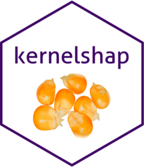

kernelshap 
Overview
The package contains three functions to crunch SHAP values:
-
permshap(): Exact permutation SHAP algorithm of [1]. Recommended for models with up to 8 features. -
kernelshap(): Kernel SHAP algorithm of [2] and [3]. Recommended for models with more than 8 features. -
additive_shap(): For additive models fitted vialm(),glm(),mgcv::gam(),mgcv::bam(),gam::gam(),survival::coxph(), orsurvival::survreg(). Exponentially faster than the model-agnostic options above, and recommended if possible.
To explain your model, select an explanation dataset X (up to 1000 rows from the training data, feature columns only) and apply the recommended function. Use {shapviz} to visualize the resulting SHAP values.
Remarks to permshap() and kernelshap()
- Both algorithms need a representative background data
bg_Xto calculate marginal means (up to 500 rows from the training data). In cases with a natural “off” value (like MNIST digits), this can also be a single row with all values set to the off value. If unspecified, 200 rows are randomly sampled fromX. - Exact Kernel SHAP is an approximation to exact permutation SHAP. Since exact calculations are usually sufficiently fast for up to eight features, we recommend
permshap()in this case. With more features,kernelshap()switches to a comparably fast, almost exact algorithm. That is why we recommendkernelshap()in this case. - For models with interactions of order up to two, SHAP values of exact permutation SHAP and exact Kernel SHAP agree.
-
permshap()andkernelshap()give the same results asadditive_shapas long as the full training data would be used as background data.
Installation
# From CRAN
install.packages("kernelshap")
# Or the development version:
devtools::install_github("ModelOriented/kernelshap")Basic Usage
Let’s model diamond prices with a random forest. As an alternative, you could use the {treeshap} package in this situation.
library(kernelshap)
library(ggplot2)
library(ranger)
library(shapviz)
diamonds <- transform(
diamonds,
log_price = log(price),
log_carat = log(carat)
)
xvars <- c("log_carat", "clarity", "color", "cut")
fit <- ranger(
log_price ~ log_carat + clarity + color + cut,
data = diamonds,
num.trees = 100,
seed = 20
)
fit # OOB R-squared 0.989
# 1) Sample rows to be explained
set.seed(10)
X <- diamonds[sample(nrow(diamonds), 1000), xvars]
# 2) Optional: Select background data. If unspecified, 200 rows from X are used
bg_X <- diamonds[sample(nrow(diamonds), 200), ]
# 3) Crunch SHAP values (22 seconds)
# Note: Since the number of features is small, we use permshap()
system.time(
ps <- permshap(fit, X, bg_X = bg_X)
)
ps
# SHAP values of first observations:
log_carat clarity color cut
[1,] 1.1913247 0.09005467 -0.13430720 0.000682593
[2,] -0.4931989 -0.11724773 0.09868921 0.028563613
# Kernel SHAP gives almost the same:
system.time( # 22 s
ks <- kernelshap(fit, X, bg_X = bg_X)
)
ks
# log_carat clarity color cut
# [1,] 1.1911791 0.0900462 -0.13531648 0.001845958
# [2,] -0.4927482 -0.1168517 0.09815062 0.028255442
# 4) Analyze with {shapviz}
ps <- shapviz(ps)
sv_importance(ps)
sv_dependence(ps, xvars)

More Examples
{kernelshap} can deal with almost any situation. We will show some of the flexibility here. The first two examples require you to run at least up to Step 2 of the “Basic Usage” code.
Parallel computing
Parallel computing for permshap() and kernelshap() is supported via {foreach}. Note that this does not work for all models.
On Windows, sometimes not all packages or global objects are passed to the parallel sessions. Often, this can be fixed via parallel_args, see this example:
library(doFuture)
library(mgcv)
registerDoFuture()
plan(multisession, workers = 4) # Windows
# plan(multicore, workers = 4) # Linux, macOS, Solaris
# GAM with interactions - we cannot use additive_shap()
fit <- gam(log_price ~ s(log_carat) + clarity * color + cut, data = diamonds)
system.time( # 4 seconds in parallel
ps <- permshap(
fit, X, bg_X = bg_X, parallel = TRUE, parallel_args = list(.packages = "mgcv")
)
)
ps
# SHAP values of first observations:
# log_carat clarity color cut
# [1,] 1.26801 0.1023518 -0.09223291 0.004512402
# [2,] -0.51546 -0.1174766 0.11122775 0.030243973
# Because there are no interactions of order above 2, Kernel SHAP gives the same:
system.time( # 13 s non-parallel
ks <- kernelshap(fit, X, bg_X = bg_X)
)
all.equal(ps$S, ks$S)
# [1] TRUE
# Now the usual plots:
sv <- shapviz(ps)
sv_importance(sv, kind = "bee")
sv_dependence(sv, xvars)Taylored predict()
In this {keras} example, we show how to use a tailored predict() function that complies with
- the Keras API,
- uses sufficiently large batches, and
- turns off the Keras progress bar.
(The results are not fully reproducible.)
library(keras)
nn <- keras_model_sequential()
nn |>
layer_dense(units = 30, activation = "relu", input_shape = 4) |>
layer_dense(units = 15, activation = "relu") |>
layer_dense(units = 1)
nn |>
compile(optimizer = optimizer_adam(0.001), loss = "mse")
cb <- list(
callback_early_stopping(patience = 20),
callback_reduce_lr_on_plateau(patience = 5)
)
nn |>
fit(
x = data.matrix(diamonds[xvars]),
y = diamonds$log_price,
epochs = 100,
batch_size = 400,
validation_split = 0.2,
callbacks = cb
)
pred_fun <- function(mod, X)
predict(mod, data.matrix(X), batch_size = 1e4, verbose = FALSE, workers = 4)
system.time( # 50 s
ps <- permshap(nn, X, bg_X = bg_X, pred_fun = pred_fun)
)
ps <- shapviz(ps)
sv_importance(ps, show_numbers = TRUE)
sv_dependence(ps, xvars)Additive SHAP
The additive explainer extracts the additive contribution of each feature from a model of suitable class.
fit <- lm(log(price) ~ log(carat) + color + clarity + cut, data = diamonds)
shap_values <- additive_shap(fit, diamonds) |>
shapviz()
sv_importance(shap_values)
sv_dependence(shap_values, v = "carat", color_var = NULL)Multi-output models
{kernelshap} supports multivariate predictions like:
- probabilistic classification,
- regression with multivariate response, and
- predictions found by applying multiple regression models.
Here, we use the iris data (no need to run code from above).
library(kernelshap)
library(ranger)
library(shapviz)
set.seed(1)
# Probabilistic classification
fit_prob <- ranger(Species ~ ., data = iris, probability = TRUE)
ps_prob <- permshap(fit_prob, X = iris[-5]) |>
shapviz()
sv_importance(ps_prob)
sv_dependence(ps_prob, "Petal.Length")
Meta-learners
Meta-learning packages like {tidymodels}, {caret} or {mlr3} are straightforward to use. The following examples additionally shows that the ... arguments of permshap() and kernelshap() are passed to predict().
Tidymodels
library(kernelshap)
library(tidymodels)
set.seed(1)
iris_recipe <- iris |>
recipe(Species ~ .)
mod <- rand_forest(trees = 100) |>
set_engine("ranger") |>
set_mode("classification")
iris_wf <- workflow() |>
add_recipe(iris_recipe) |>
add_model(mod)
fit <- iris_wf |>
fit(iris)
system.time( # 3s
ps <- permshap(fit, iris[-5], type = "prob")
)
ps
# Some values
$.pred_setosa
Sepal.Length Sepal.Width Petal.Length Petal.Width
[1,] 0.02186111 0.012137778 0.3658278 0.2667667
[2,] 0.02628333 0.001315556 0.3683833 0.2706111caret
library(kernelshap)
library(caret)
fit <- train(
Sepal.Length ~ .,
data = iris,
method = "lm",
tuneGrid = data.frame(intercept = TRUE),
trControl = trainControl(method = "none")
)
ps <- permshap(fit, iris[-1])mlr3
library(kernelshap)
library(mlr3)
library(mlr3learners)
set.seed(1)
task_classif <- TaskClassif$new(id = "1", backend = iris, target = "Species")
learner_classif <- lrn("classif.rpart", predict_type = "prob")
learner_classif$train(task_classif)
x <- learner_classif$selected_features()
# Don't forget to pass predict_type = "prob" to mlr3's predict()
ps <- permshap(
learner_classif, X = iris, feature_names = x, predict_type = "prob"
)
ps
# $setosa
# Petal.Length Petal.Width
# [1,] 0.6666667 0
# [2,] 0.6666667 0References
[1] Erik Štrumbelj and Igor Kononenko. Explaining prediction models and individual predictions with feature contributions. Knowledge and Information Systems 41, 2014.
[2] Scott M. Lundberg and Su-In Lee. A Unified Approach to Interpreting Model Predictions. Advances in Neural Information Processing Systems 30, 2017.
[3] Ian Covert and Su-In Lee. Improving KernelSHAP: Practical Shapley Value Estimation Using Linear Regression. Proceedings of The 24th International Conference on Artificial Intelligence and Statistics, PMLR 130:3457-3465, 2021.